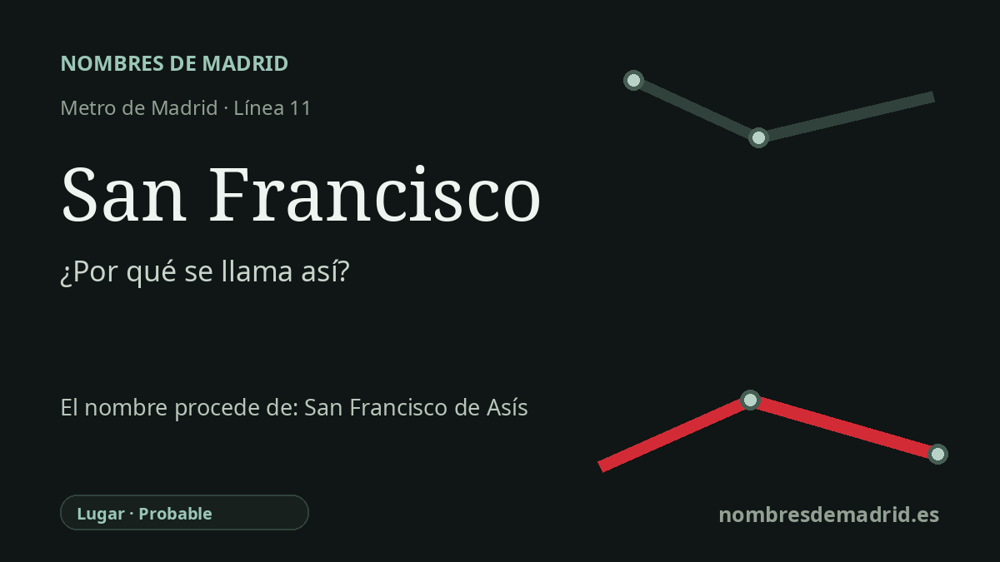

Publicado el · Investigación de Nombres de Madrid · Cómo verificamos cada origen · 6 fuentes consultadas
Respuesta rápida
La estación de San Francisco toma su nombre de la zona de San Francisco en Carabanchel, en especial de la Colonia de San Francisco que figura en la cartografía municipal de Madrid. La referencia religiosa última es probablemente san Francisco de Asís, pero la base inmediata del nombre de la estación es el topónimo local.
La historia del nombre
La estación de San Francisco toma su nombre de la zona de San Francisco en Carabanchel, no de una calle junto a la estación que haya podido documentarse con ese nombre. La cartografía del Ayuntamiento de Madrid rotula en el entorno de Puerta Bonita y de la estación una **Colonia de San Francisco**, y las noticias de la prolongación de la línea 11 en 2006 describían las nuevas paradas como servicio para la Colonia de la Prensa, San Francisco, Carabanchel Alto y el PAU de Carabanchel.
El nombre de fondo probablemente remite a **san Francisco de Asís**. Francisco, nacido en Asís en 1181 o 1182 y fallecido allí en 1226, es una de las figuras medievales más veneradas del catolicismo y se le reconoce como fundador de las órdenes franciscanas. Por eso el nombre tiene una referencia religiosa última, aunque la capa inmediata que explica la estación es geográfica y local.
El tejido urbano cercano ayuda a entender por qué un nombre de colonia o barrio podía dar nombre al Metro. Muy próxima se encuentra la antigua Colonia de la Prensa, trazada entre Carabanchel Bajo y Carabanchel Alto a comienzos del siglo XX para escritores y periodistas, con hotelitos ajardinados y una identidad residencial propia. San Francisco se inserta en ese paisaje carabanchelero de colonias, antiguos núcleos de pueblo y ensanches posteriores.
La cronología del transporte es importante porque el dato existente en la redacción es erróneo. San Francisco no se inauguró en 2010; un estudio de la Comunidad de Madrid sobre la línea 11 enumera el tramo San Francisco-Carabanchel Alto-La Peseta como inaugurado en 2006, mientras que la apertura de 2010 corresponde a la prolongación posterior hasta La Fortuna. Las crónicas contemporáneas sitúan la inauguración el 18 de diciembre de 2006.
La explicación pública más prudente es, por tanto, que la estación recibió el nombre del ámbito o Colonia de San Francisco en Carabanchel, cuyo nombre probablemente alude a san Francisco de Asís. No se ha encontrado pruebas sólidas de que el nombre del Metro proceda específicamente de una Calle de San Francisco ni de que una presencia franciscana medieval en Carabanchel sea la causa documentada de este topónimo.